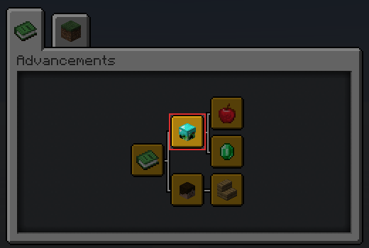
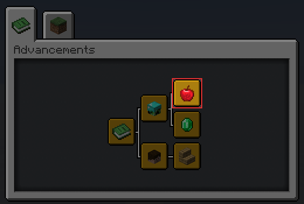

Datapack Advancement (*)
About
This convention aims to generalize installation messages in an easily viewable and non-obstructive way by putting it on a single advancement page.
Preview
This is an example of what this convention will look like.

Implementation
This guideline defines 3 advancement nodes: Root, Namespace and Datapack.
1. Root Advancement
This advancement is the root of all installed datapacks' advancements.

You must create this file at /data/global/advancements/root.json.
{
"display": {
"title": "Installed Datapacks",
"description": "",
"icon": {
"item": "minecraft:knowledge_book"
},
"background": "minecraft:textures/block/gray_concrete.png",
"show_toast": false,
"announce_to_chat": false
},
"criteria": {
"trigger": {
"trigger": "minecraft:tick"
}
}
}
2. Namespace Advancement
This advancement indicates the creator of the datapack.

It must be in the same location in every datapack of yours. I recommend that you put it inside /data/global/advancements/<namespace>.json.
{
"display": {
"title": "<Your name>",
"description": "",
"icon": {
"item": "minecraft:player_head",
"nbt": "{SkullOwner: '<your_minecraft_name>'}"
},
"show_toast": false,
"announce_to_chat": false
},
"parent": "global:root",
"criteria": {
"trigger": {
"trigger": "minecraft:tick"
}
}
}
Note
If you are working on a project with multiple people you can choose to:
- Display this advancement as your own and credit them with other methods.
- Display this advancement with the "team name" of your choice.
- Display a "Standalone Datapack" instead.
3. Datapack Advancement
This advancement is used to display installation information about your datapack. It should be unique among your datapacks.

You can create this advancement anywhere, as long as you don't pollute /data/global/advancements/folder.
{
"display": {
"title": "<datapack name>",
"description": "<datapack description>",
"icon": {
"item": "<item>"
},
"announce_to_chat": false,
"show_toast": false
},
"parent": "global:<namespace>",
"criteria": {
"trigger": {
"trigger": "minecraft:tick"
}
}
}
Note
The syntax <...> indicates that you have to replace it with something else!
Extra: Standalone Datapack
This is an optional syntax that you can take to display an installed datapack without displaying the creator's information.
To implement this you simply skip the #2: Namespace Advancement step and make sure that in step #3: Datapack Advancement you create your file inside the /data/global/advancements/standalone/ directory.
Keep in mind that if you are planning to release more datapacks under this name, you should use the normal syntax over this one.